Style rectangles
rect_style.RdChanges the fill, border, and transparency of rectangles in a Rectangler plot. Values can be set directly or mapped from columns in the original data.
Usage
rect_style(
plot,
fill = NULL,
fill_col = NULL,
border_colour = NULL,
border_color = NULL,
border_colour_col = NULL,
border_color_col = NULL,
border_width = NULL,
border_width_col = NULL,
border_type = NULL,
border_type_col = NULL,
alpha = NULL,
alpha_col = NULL
)Arguments
- plot
A Rectangler plot created with
rect_plot4(),rect_row(),rect_col(), orrect_pyr().- fill
Rectangle fill colour.
- fill_col
Name of the column containing rectangle fill colours.
- border_colour
Rectangle border colour.
- border_color
Alias for
border_colour.- border_colour_col
Name of the column containing rectangle border colours.
- border_color_col
Alias for
border_colour_col.- border_width
Rectangle border width.
- border_width_col
Name of the column containing rectangle border widths.
- border_type
Rectangle border line type.
- border_type_col
Name of the column containing rectangle border line types.
- alpha
Rectangle transparency.
- alpha_col
Name of the column containing rectangle transparency values.
Examples
rect_plot4(rect_data_demo) %>%
rect_style(fill = "grey90", border_colour = "white")

rect_plot4(rect_data_demo) %>%
rect_style(fill_col = "fill")
